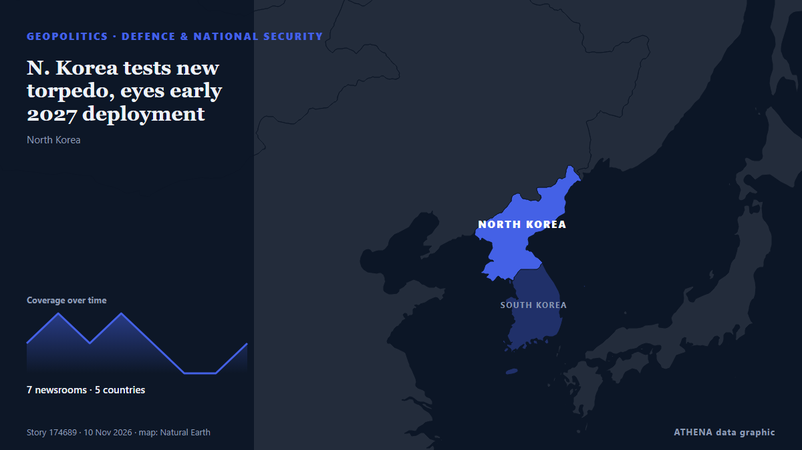

Défense et sécurité nationale
SponsoriséPrésenté par  Cybernetics and Artificial Intelligence Lab Welcome to the Cybernetics and Artificial Intelligence Laboratory, established at the Department of Business Administration of the National and Kapodistrian University of Athens. The lab is headed by Professor Dimitrios Thomakos. The lab aims to do research that can be published in top venues. Our research uses tools and methods of Artificial Intelligence, and lies in the following areas: - Forecasting - Decision making - Cyber security - Finance We are always looking forward to collaborating with exceptional students!
Cybernetics and Artificial Intelligence Lab Welcome to the Cybernetics and Artificial Intelligence Laboratory, established at the Department of Business Administration of the National and Kapodistrian University of Athens. The lab is headed by Professor Dimitrios Thomakos. The lab aims to do research that can be published in top venues. Our research uses tools and methods of Artificial Intelligence, and lies in the following areas: - Forecasting - Decision making - Cyber security - Finance We are always looking forward to collaborating with exceptional students!
| 29 oct. | 0 |
|---|---|
| 30 oct. | 0 |
| 31 oct. | 0 |
| 1 nov. | 0 |
| 2 nov. | 0 |
| 3 nov. | 0 |
| 4 nov. | 0 |
| 5 nov. | 1 |
| 6 nov. | 1 |
| 7 nov. | 2 |
| 8 nov. | 4 |
| 9 nov. | 8 |
| 10 nov. | 7 |
| 11 nov. | 0 |
Les titres sont affichés en anglais, tels que publiés.

N. Korea tests new torpedo, eyes early 2027 deployment
SEOUL, Nov. 10 (Yonhap) -- North Korea has test-fired a new type of torpedo in t... de Yonhap (English)
Jury convicts Virginia man of murdering, chopping up wife
Naresh Bhatt claims his wife died by suicide and that he panicked when he found her body, which led him to dismember her and throw her into the garbage. de Courthouse News
12 US Senators seek removal of provisions expanding defense cooperation with Israel
Lawmakers warn that mandated co-production and intelligence sharing could limit executive authority and give Tel Aviv greater leverage. de Anadolu Agency (English)
The USS Theodore Roosevelt Is Finally on Its Way to the Middle East
The US Navy supercarrier left port more than a month ago, and has made several stops in Asia on its way west. de The National Interest
Top White House staffer leaves after Stephen Miller promoted
Richard Walters leaving after six months as one of Susie Wiles’ ‘closest political lieutenants’ as Trump administration shake-up continues following midterms wipeout. de The Independent
Hegseth to cut civilians from military service colleges, wants focus on ‘victory’
Hegseth ordered an overhaul of higher military service colleges today, releasing a memorandum listing 33 directives that he stated would be effective immediately. de Military Times
Pentagon: Era of US funding Europe's defense is coming to an end
A U.S. Army unit in Germany is not sure what’s next as the Pentagon considers a major drawdown of forces in Europe. de The New York Times (World)
Rubio: Israel Can Purchase US Weapons Without American Financial Aid
Speaking on Monday, Rubio said Israel had "graduated beyond" the need for financial aid, while emphasizing that it could continue purchasing military equipment from the United States without… de Kurdistan24 (English)
Finland's navy chief says Russia's presence in the Baltic Sea may have peaked for now
Russia may have reached the limit of its "peacetime" ability to project force in the Baltic Sea, with the maritime situation "tense" but "stable", the head of Finland's navy has said. de Sky News (World)
Dendias Outlines New Era for Hellenic Air Force
Defence Minister Nikos Dendias outlines plans for fifth-generation fighters, three KC-390 aircraft, advanced air defence and Greece's first Space Command. de Greek City Times
Defense attorney in Tupac Shakur murder trial discovered dead inside his Vegas home
The lawyer who defended the man convicted of killing rapper Tupac Shakur was found dead Friday inside his Las Vegas home, a short time… de ABA Journal
Greek Shipyard Secures Role in Sweden’s €4.3B Frigate Program
Salamina Shipyards has signed an agreement with France’s Naval Group to build pre-equipped sections for four Swedish FDI frigates, expanding its work beyond vessels ordered by the Greek and French… de to vima
NSC Sec-Gen: Thailand faces daily cyber threats
Thailand faces daily cyberattack attempts targeting government agencies, banks and critical infrastructure, with attackers increasingly using artificial intelligence (AI) to identify vulnerabilities… de Bangkok Post
U.S. reaffirms commitment to conditions-based OPCON transition to S. Korea: lawmaker
SEOUL, Nov. 8 (Yonhap) -- The United States has reaffirmed its commitment to a c... de Yonhap (English)
Serbia's election-winning student list proposes raising defense spending to 5% of GDP
Set to lead the next government after winning 140 parliamentary seats, student-backed movement outlines military pay raises and modernization priorities. de Anadolu Agency (English)
Russian forces hit electrical substation in Zhitomir region
This electrical substation supplies power to enterprises of Ukraine’s military-industrial complex, the Russian Defense Ministry reported. de TASS (English)
US Offers $20M Reward for Intel on Iran’s Nuclear Program
The US Department of State’s Rewards for Justice program has announced a bounty of up to $20 million and permanent resettlement for actionable intelligence on Iran’s nuclear program, targeting… de Kyiv Post